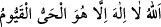

sildiğiniz zaman ise
“
” (el-Bakara 2/255; Âl-i İmran 3/2) âyetinde olduğu gibi “ ”
kalır.”
[104]. Süyûtî, ed-Dürru’l-mensûr, II, 298
[105]. Buhârî, Edeb 38; Müslim, Birr, 65; Tirmizî, Birr, 18; Nesâî, Zekat 67;
Müsned, IV, 104, 405, 409
[106]. Buhârî, Bed’ül-Halk 6; Meğazi, 30; Müslim, Fedailu’s-sahâbe 153; Müsned,
IV, 286, 298, 299, 301
[107]. Müsned, II, 359
[108]. Müsned, I, 374, 462, 464